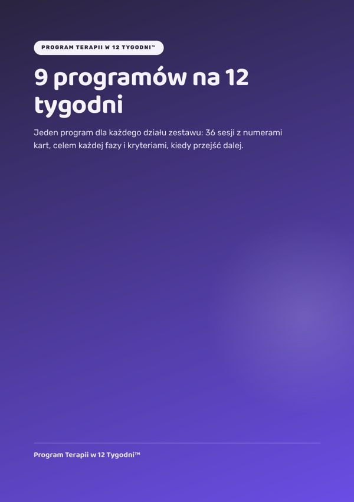

Zestaw główny
9 programów na 12 tygodni
Jeden program dla każdego działu zestawu: 36 sesji z numerami kart, celem fazy i kryteriami, kiedy przejść dalej.
Otwórz →Twoje bonusy
Bonus 1
Raport w 10 minut
120 gotowych zdań do raportów według obszarów i poziomów. W PDF i w pliku Word do kopiowania.
Otwórz →Bonus 2Rozmowa z rodzicami bez stresu
Scenariusze na pierwszą rozmowę, na rozmowę o postępach i na tę najtrudniejszą.
Otwórz →Bonus 3Test startowy w 15 minut
Zabawa z 10 kartami zestawu, która podpowiada, od którego programu zacząć.
Otwórz →BonusKalendarz programu do druku
Kalendarz 12 tygodni dla każdego z 9 programów. Bonus dla pierwszych 100 osób.
Otwórz →BonusCertyfikat ukończenia programu dla dziecka
Bonus niespodzianka: certyfikat do wręczenia dziecku po 12 tygodniach.
Otwórz →Od czego zacząć
- Zrób «Test startowy w 15 minut» z jednym dzieckiem.
- Otwórz program dla obszaru z najniższym wynikiem i zacznij od tygodnia 1, sesji 1.
- Wydrukuj kalendarz programu i powieś go na ścianie.
- Co 3 tygodnie sprawdź kryterium fazy, a po 12 tygodniach napisz raport w 10 minut.
Do użytku osobistego. Zakaz odsprzedaży i rozpowszechniania.